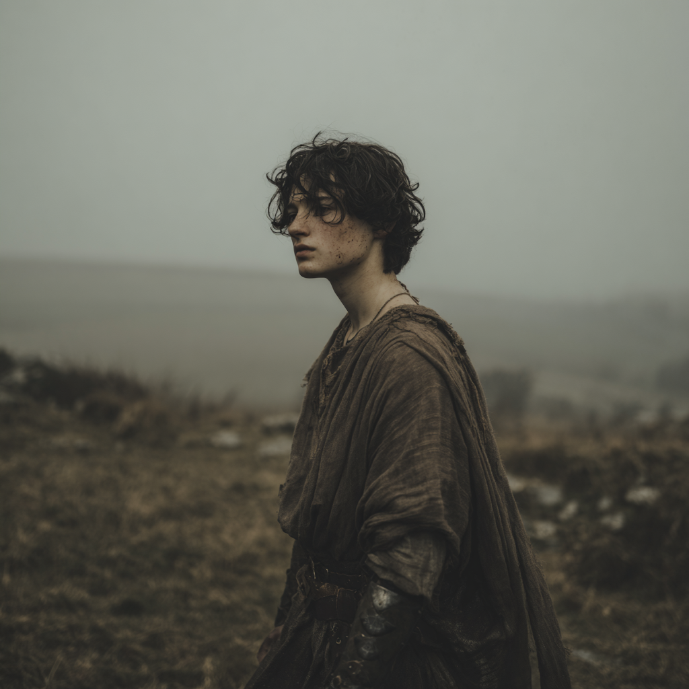

Squire Llwyd "Paun" son of Sir Geraint ap Llwyd
of the Belgae · rebel-blooded · squired to Sir Eamon · the boy with the dulcet voice

I. Identity & Station
Squire Llwyd, called Paun, is a squire of the Wolves of Vagon, attached as of the pilgrimage to Glastonbury in early 465 to Sir Eamon. He is seventeen years old (born 447), Cymric of the Belgae tribe, British Christian, and the son of Sir Geraint ap Llwyd, who died at the Battle of Kent in 457 on the rebel side against Vortigern. The family remains rebels; the lands are currently held in stewardship by an uncle. Paun is on the sheet as heir.
Distinguishing Features
From his sheet, three plainly: strapping, straight teeth, dulcet voice. Tall (SIZ 14) and well-built; striking enough in appearance (APP 16) to be looked at across rooms. The voice is the most remarkable thing about him and the most consequential in play.
Bearing in Play
What has been demonstrated at the table: he plays harp and sings at feasts, and gains admiration for it. He has discussed falconry with Sir Hywel ap Knook on at least two occasions (the autumn hunt and the Session 3 feast). He won his sparring bout against Caradoc and lost his against Gorthyn. He was struck by the counterweight at the quintain. He charged a bandit on foot with a great mace and pursued a fleeing one alone into the woods. He took a major wound in the Saxon engagement that followed Bramblethorn.
Strapping, straight teeth, dulcet voice. The features as written on his sheet
II. Mechanical Profile
Statistics
Hit Points 10. Money: £0 / 0d. Standard of Living: Ordinary. Homeland: South Counties (Belgae). The +3 culture bonus to CON is the Cymric inheritance.
Passions & Honour
| Passion | Value | Note |
|---|---|---|
| Devotion (God) | 10 | British Christian. |
| Hospitality | 10 | Cymric civic virtue. |
| Station | 10 | |
| Hate (Saxons) | 8 | Inherited at 15; currently 8 on the sheet. |
| Chivalry | 7 | |
| Homage, Fealty, Loyalty (King & Companions), Duty (Vassals), Love (Person), Hate (Person) | 0 | Unset — await play. |
Traits
Christian religious virtues marked †. Dominant religious virtues: Modest, Spiritual, Generous. Balanced religious virtues: Chaste, Merciful. Religious virtue with a dominant vice opposite: Forgiving / Vengeful 13.
| Chaste | 10 | 10 | Lustful |
| Energetic | 9 | 11 | Lazy |
| Forgiving | 7 | 13 | Vengeful |
| Generous | 11 | 9 | Selfish |
| Honest | 9 | 11 | Deceitful |
| Just | 5 | 15 | Arbitrary |
| Merciful | 10 | 10 | Cruel |
| Modest | 13 | 7 | Proud |
| Prudent | 13 | 7 | Reckless |
| Spiritual | 12 | 8 | Worldly |
| Temperate | 9 | 11 | Indulgent |
| Trusting | 10 | 10 | Suspicious |
| Valorous | 17 | 3 | Cowardly |
Valorous 17 is his single highest trait by margin. Just 5 / Arbitrary 15 is his largest skew. Forgiving 7 / Vengeful 13 is the one religious virtue that lost to its vice opposite, in a family carrying Hate (Vortigern).
Notable Skills
Courtly cluster (11)
Soldier's tier (6–7)
Baseline (5)
Awareness, Battle, Compose, Falconry, Gaming, Hunting (effective 0 under the family fae curse), Recognize, Religion (Christian), Stewardship. Literacy (Ogham): 0.
The shape of the skill list. A sharp courtly cluster at 11 and a soldier's cluster at 6 — with Compose only at 5. He is a singer first, a harper second, and a composer not yet.
Valorous 17 with Prudent 13. Both dominant. He will close, but not blindly.
Hate Saxons 8. The inherited roll was 15. The current value is 8. Whatever brought it down has happened in play or in the player's choices; the gap is itself part of the record.
III. Combat Loadout & Heraldry
Armour (layered)
Aketon (AP 2) under Gambeson (AP 4) under Haubergeon (AP 4, mail). Open Helm (AP 1). Large round shield (AP 6, −2 weapon skill when mounted).
Weapons on the Sheet
Cheap sword, dagger, one-handed spear, two-handed spear, great mace (two-handed hafted, +3D6 vs mail), wooden practice sword, selfbow.
Choices in Play
- The autumn hunt: two-handed club from the armoury.
- Bramblethorn (the bandit fight in the snow): great mace on foot, spear from horseback.
Coat of Arms

A sun in splendour upon a bend of blue and green stripes, on a field of gold. To be borne in full upon knighthood.
IV. The Wolves of Vagon
The eschille that took the Sarum squires for training in autumn 464, sheltered them at Vagon through the winter, and named the final pairings during the pilgrimage to Glastonbury in early 465. Paun is squired to Sir Eamon. Sir Elaid is castellan and leads the eschille.
V. His Fellow Squires
VI. Lady Branwen ferch Cadoc
Already a passion on the sheet — Adoration (Branwen) 9, the only directed love-passion Paun carries. She exists in the campaign as an NPC.
What the Sheet and the History Record
From the Midsummer Feast of 462 history entry: "Paun played harp and sang, and then spoke to one of the knights about falconry (he betrayed his ignorance). Then Branwen asked Paun to dance, and he was so flummoxed that he kept stepping on her toes and apologizing, and she teased him about it." Paun was fifteen. The feast earned him +57 Glory.
From the 465 Glory log: his first performance of the Lay of Squire's Hill was awarded a separate +10 Glory, with the note "In the audience was Branwen."
Her patronymic ferch Cadoc gives her father's name. Beyond that, nothing about her family or rank is established in the canonical sources.
Appearance
From the reference portraits supplied for her: dark auburn hair, pale skin, an oval face, a quiet and watchful expression. She is depicted in court-quality wool gowns — a deep teal-blue with gold-and-bronze embroidery at the bodice, paired with a white linen veil pinned by a jewelled circlet; elsewhere a wine-burgundy gown with finer ornament at the neckline. The bearing is composed and inward.
What This Means in Play
- The Adoration is on the sheet. The campaign can invoke it.
- The two recorded interactions span three years — 462 to 465. She remembers him; he is composing songs whose first performances she is present for.
- Adoration 9 is the only one of Paun's passions with a named directed object. Honour 17, Valorous 17, and the high courtly skill cluster all have ways to entangle with it when she next appears.
Her family beyond her father's name, her age, her rank, and any specifics about why the attraction works for either of them. This dossier records only what the FVTT sheet, the FVTT history entries, the session notes, and the supplied reference portraits establish.
VII. The Father's Inheritance
The background text on the sheet describes a full life for Sir Geraint ap Llwyd (pronounced "GEH-rynt ahp THLOOEED") and the family arc up to Paun's squireship.
| Year | Event in the family record |
|---|---|
| 440 | Constantine III murdered; Irish extend holdings. Sir Geraint fought at the Battle of the River Parrot against the Irish. Lost his right eye but gained an impressive, distinctive scar. Developed mild Suspicion (Atrebates warriors) 7. +60 Glory. |
| 442 | Both Gorthyn's father and Paun's father attended the coronation of Constans. |
| 443 | Constans murdered. |
| 446 | Pict invasion. Sir Geraint fought at the Battle of Lincoln, distinguished himself despite his dead right eye. +540 Glory. |
| 447 | Vortigern becomes High King. Saxons given property; Cymri not consulted, many driven from their lands. A papal prelate arrives and heals a leper; Sir Geraint is present. +20 Glory. Paun is born this year. |
| 448 | More Saxons arrive, as does Rowena. When Cymri complained about favouritism, Sir Geraint kept his head down. |
| 449 | New foe on the continent: the Huns. Saxons prove useful defence against the Irish, pirates, and Picts. Sir Geraint kept his own counsel despite things getting worse. |
| 450 | Vortigern marries Rowena, gives her father Hengest the entire county of Kent. While hunting in the woodlands, Sir Geraint offended the fae, who cursed the family's hunting (−5 to Hunting rolls). |
| 454 | Fought the Irish in Cornwall. +920 Glory. |
| 456 | Switched allegiance to the dissidents. Fell ill. |
| 457 | Fought at the Battle of Kent on the side of the rebels. Died in battle. +60 final Glory; lifetime total 2,282. Developed Hate (Vortigern) 13. |
| 458 | Paun's uncle takes stewardship of the lands. Parts of the extended family pack up and move to Brittany. |
| 461 | A cousin fought at the Battle of Watsom Channel. |
| 462 | Relatives fought at the Battle of Ebbsfleet. Survived. |
| 463 | An uncle of Paun killed by Kent Saxons at the Night of the Long Knives. |
What Paun Inherited Mechanically
- Hate (Saxons) Passion: rolled 15. Currently 8 on the sheet.
- Fae Curse: Hunting −5. From 450. Persistent.
- Starting Glory: 570. Inherited in 463.
- The political position: the family remains rebels.
VIII. Life Timeline
IX. Glory Ledger
| Year | Event (as recorded on the sheet) | Glory |
|---|---|---|
| 462 | Midsummer Feast (harping, singing, the dance with Branwen) | +57 |
| 463 | Inherited Glory | +570 |
| 464 | Winter Phase (passive) | +80 |
| 464 | Training and Practice: Just +1 | — |
| 465 | Battle of Squire's Hill | +80 |
| 465 | First Performance of the Lay of Squire's Hill (in the audience was Branwen) | +10 |
| 465 | Fought and killed Barghests | +100 |
| 465 | Rescued Merlin from a Bandit Attack | +50 |
| 465 | Easter Feast of Cameliard | +80 |
| 465 | Charge on the Saxons at Bambury | +35 |
| 465 | Killed two giants and a barghest | +200 |
| 465 | Rescue of Sir Roderick | +100 |
| Sum of recorded entries | 1,362 | |
X. In Play So Far
Paun has been played for some months at the time of this compilation. Unlike Tiphaine's dossier, where the threshold of play has not yet been crossed, this section can record what the sheet and the session notes between them establish about how the character has actually behaved.
What Has Been Demonstrated
- In court: he plays harp and sings, gains admiration for it. He has discussed falconry with Sir Hywel ap Knook twice. He has performed the Lay of Squire's Hill, which earned a glory entry of its own.
- In sparring: defeated Caradoc; lost to Gorthyn; was struck by the quintain counterweight.
- In the field: chose the two-handed club for the autumn hunt; chose great mace and spear for Bramblethorn. Charged a bandit on foot, then pursued a fleeing one alone into the woods. Took a major wound in the Saxon engagement that followed.
- In service to the eschille: fetched water for Sir Rhain; kicked Cináeda awake out of bed with Jillian; brought Brother Jonathan to tend Cináeda; returned hunting gear to the armoury; planned to serve Cináeda stew on waking; fetched Cináeda's spare tunic; escorted Jenny to the chapel with food.
- In conversation: talked with Gorthyn about their fathers' histories in December 464. Took Sir Aemon's advice to keep counsel on his aspirations.
Open Threads on His Record
- Prepare protective talismans from the boar tusks (open item from the pilgrimage session).
- Address family grievances with Vortigern (open item from Session 2).
- Continue practising music and falconry (open item from Session 3).
- The quest for the Red Dragon Banner, agreed upon after the late-winter engagement.
- The unset bonds — Homage, Fealty, Loyalty (King), Loyalty (Companions), Duty (Vassals) — await knighthood and the lord he serves.
A Note for the Gamemaster
The most interesting structural facts on the sheet are: Valorous 17 (highest single trait by margin), Just 5 / Arbitrary 15 (largest skew), Forgiving 7 / Vengeful 13 (the religious virtue that lost to its vice in a family with a Hate-Vortigern inheritance), Honour 17, and Adoration (Branwen) 9. The courtly cluster at 11 is real and is deployed in play. The Hate Saxons passion has dropped from rolled-15 to current-8; whatever brought it down is part of the record. Compose is only 5 despite the composing he is doing — the voice is doing the work the composition skill cannot yet.